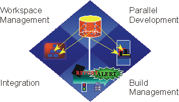

| Concept: Change Control |
 |
|
 Managing change is more than just checking-in and checking-out files. It includes management of workspaces, parallel development, integration, and builds. A key challenge when you're developing software-intensive systems is that you must cope with multiple developers, organized into different teams, possibly at different sites, working together on multiple iterations, releases, products, and platforms. In the absence of disciplined control, the development process rapidly degenerates into chaos. In the Rational Unified Process, this practice describes how you meet this challenge. Coordinating the Activities and ArtifactsCoordinating the activities and artifacts of developers and teams involves establishing repeatable procedures for managing changes to software and other development artifacts. This coordination allows a better allocation of resources based on the project's priorities and risks, and it actively manages the work on those changes across iterations. Coupled with developing your software iteratively, this practice lets you continuously monitor changes so that you can actively discover, and then react to problems. Coordinating Iterations and ReleasesCoordinating iterations and releases involves establishing and releasing a tested baseline at the completion of each iteration. Maintaining traceability among the elements of each release and among elements across multiple, parallel releases is essential for assessing and actively managing the impact of change. Controlling Changes to SoftwareControlling changes to software offers a number of solutions to the root causes of software development problems:
|
| © Copyright IBM Corp. 1987, 2012 All Rights Reserved Property of IBM These materials are intended only for use as part of an IBM engagement |